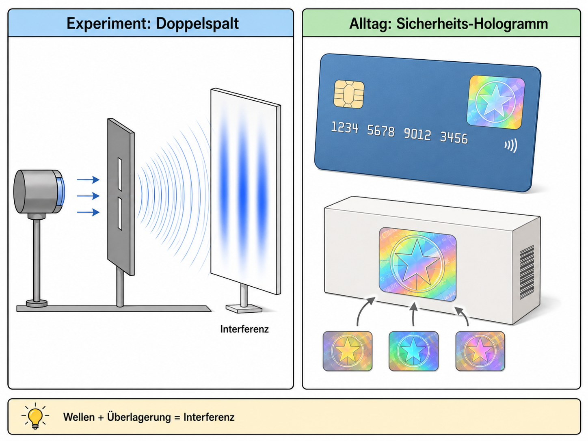

Welcher-Weg-Information und Kopenhagener Deutung
Warum verschwindet Interferenz, wenn der Weg bekannt wird?

1Leitfrage, Vorwissen und Vernetzung
Leitfrage: Warum verschwindet Interferenz, wenn der Weg bekannt wird?
Das brauchst du vorher
Das wird später wichtig
Zielkompetenzen
- Bedingungen für Auftreten oder Ausbleiben von Interferenz beschreiben.
- Modelle Welle, Teilchen, Quantenobjekt in ihrem Gültigkeitsbereich beurteilen.
- Kopenhagener Deutung als eine Interpretation darstellen und Grenzen anschaulicher Begriffe reflektieren.
2Lokale Simulation: vorhersagen – beobachten – erklären
Diese Simulation läuft lokal im Lernpfad. Verändere zunächst nur eine Größe und notiere, was sich ändert.
3Ergänzende Simulationen und Materialien
Externe Simulationen werden als Buttons geöffnet. Auf dem iPad funktioniert das stabiler als ein eingebettetes Fremdfenster.
Detektor ein- und ausschalten; Interferenzsichtbarkeit vergleichen.
LEIFI: Wesenszüge der QuantenphysikFachbegriffe Quantenobjekt, Messung und Komplementarität sichern.
PhET: Mach-Zehnder / Quantum Interferometer AlternativeAls Ersatz mit Doppelspalt: Interferenz und Wegdiagnose sprachlich sauber trennen.
4Experimente mit Durchführung, Auswertung und Protokoll
Wähle je nach Ausstattung einen Realversuch, eine Demo, eine Simulation oder eine Datenauswertung. Beobachtung und Deutung werden getrennt protokolliert.
1. Welcher-Weg-Information im DoppelspaltSimulation / Deutungsvergleich
Material
iPad, Simulation, Beobachtungsbogen.
Durchführung
Erst ohne Detektor messen, danach mit Wegdetektor. Die Muster werden nebeneinander skizziert.
Auswertung
Auswertung in drei Spalten: Beobachtung, Modell, Deutung. Kernaussage: Interferenz setzt prinzipielle Ununterscheidbarkeit der Wege voraus.
Protokoll
Vergleichsprotokoll mit Interferenzsichtbarkeit und Welcher-Weg-Information.
Quelle/Anregung: PhET: Quantum Wave Interference
2. Polarisations-Analogie: Interferenzkontrast verändernDemoversuch / Analogexperiment
Material
Laser, Doppelspalt, Polarisationsfolien, Schirm; alternativ Simulation/Screenshots.
Durchführung
Polarisationsfolien markieren die Wege. Danach wird ein weiterer Polarisator als Analysator eingesetzt.
Auswertung
Die Lernenden bewerten, wie weit der Analogversuch trägt: Er zeigt die Rolle unterscheidbarer Wege, ist aber kein vollständiger Quantenversuch mit Einzeltreffern.
Protokoll
Protokoll: Aufbauvariante – Sichtbarkeit – mögliche Weginformation – Deutung.
Quelle/Anregung: LEIFI-Physik: Wesenszüge Quantenphysik
3. Deutungen vergleichenMaterialgestützte Diskussion
Material
Kurze Textkarten zu Kopenhagener Deutung, Ensemble-Sicht und Alltagsfehlvorstellungen.
Durchführung
Aussagen werden nach Beobachtung, Modell und Interpretation sortiert.
Auswertung
Die Auswertung zielt auf präzise Sprache: Nicht „das Elektron weiß etwas“, sondern Messanordnung und Wahrscheinlichkeitsverteilung werden beschrieben.
Protokoll
Sortiertabelle und korrigierte Fachformulierung.
Quelle/Anregung: Springer/Unterrichtsmaterial: Quantenphysik-Deutungen
4. Detektor-EntscheidungskartenErgänzender Versuch / Auswertung
Material
Doppelspalt-Skizzen mit und ohne Wegdetektor, Aussagekarten, Sortierbogen.
Durchführung
Zu jeder Versuchsanordnung wird vorhergesagt, ob ein Interferenzmuster zu erwarten ist.
Auswertung
Auswertung: Messanordnung und Information verändern die beobachtbare Verteilung.
Protokoll
Protokolliere Fragestellung, Vermutung, Durchführung, Beobachtung, Auswertung, Fehlerquellen und einen Ergebnissatz.
Quelle/Anregung: Ergänzung für Q2-GK-Lernpfad, angelehnt an LEIFI/PhET/FU-Berlin/Leybold-Kontexte
Digitales Protokoll
5Interaktive Messdaten- und Diagrammauswertung
Lies Achsen und Einheiten genau. Nutze den Graphen als Material, wie es in Klausuren häufig vorkommt.
6Formelarbeit und adaptive Hilfe
Formel umstellen
1. Gesuchte Größe markieren. 2. Formel symbolisch umstellen. 3. Einheiten umrechnen. 4. Zahlen einsetzen. 5. Ergebnis mit Einheit deuten.
Einheitenanker
\(1\,\mathrm{nm}=10^{-9}\,\mathrm{m}\), \(1\,\mathrm{pm}=10^{-12}\,\mathrm{m}\), \(1\,\mathrm{eV}=1{,}602\cdot10^{-19}\,\mathrm{J}\), \(1\,\mathrm{kV}=1000\,\mathrm{V}\).
7Problematisch falsche Aussage korrigieren
Problematisch falsche Aussage: Das Elektron entscheidet sich bewusst, ob es Welle oder Teilchen sein will.
Aufgabe: Markiere gedanklich den problematischen Teil. Korrigiere die Aussage so, dass sie fachlich präzise und für Q2-Grundkurs verständlich ist.
8Klausur- und Prüfungstraining
Prüfungstraining mit Material
Material: Material zum Lernpfad „Welcher-Weg-Information und Kopenhagener Deutung“: Eine Messreihe, ein Diagramm oder eine Modellskizze liegt vor.
- Beschreiben Sie die zentrale Beobachtung fachsprachlich.
- Werten Sie eine passende Größe rechnerisch oder grafisch aus.
- Erklären Sie das Ergebnis mithilfe des Modells und nennen Sie eine Modellgrenze.
Musterlösung gestuft anzeigen
Eine vollständige Lösung muss Beobachtung, Rechnung/Diagramm und Modellbezug trennen. Typische Fehler sind unklare Einheiten und zu anschauliche Alltagsbilder.
Operatorencheck
- Beschreiben: Was ist sichtbar oder gegeben?
- Auswerten: Welche Größe wird aus Daten, Diagramm oder Formel gewonnen?
- Erklären: Welches Modell begründet den Befund?
- Beurteilen: Welche Aussage ist tragfähig, welche Grenze muss genannt werden?
9Sichern, vernetzen und KI-Diagnose
Schreibe eine Drei-Satz-Sicherung: 1. zentraler Befund, 2. passende Formel/Modellidee, 3. typische Fehlerquelle.